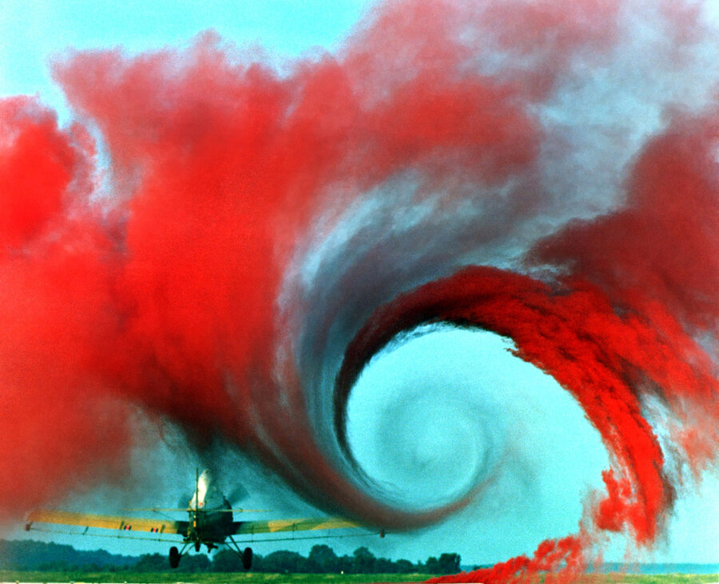
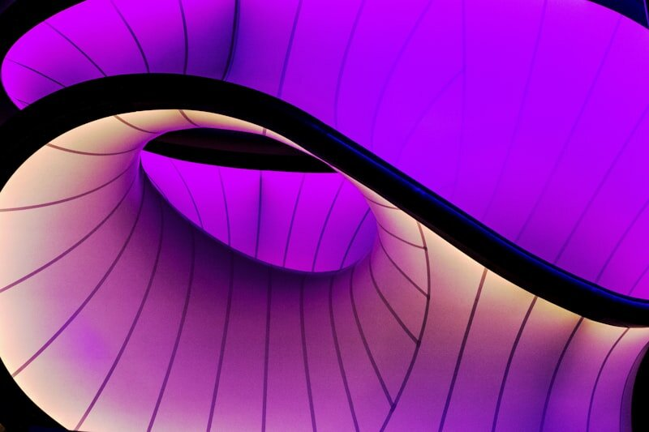
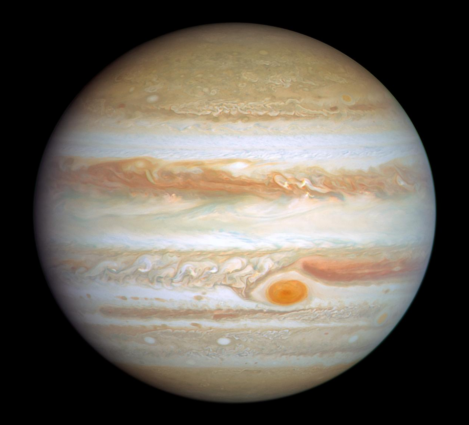
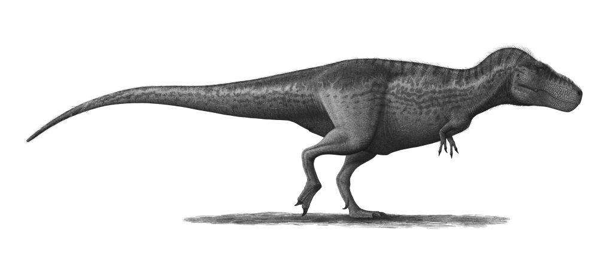
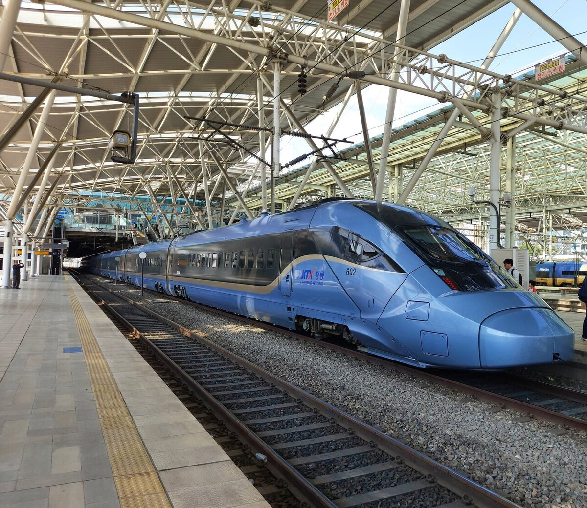
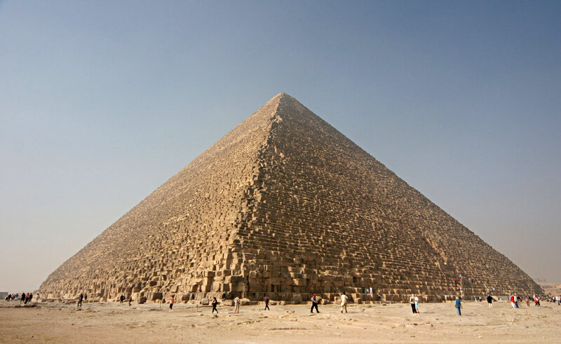
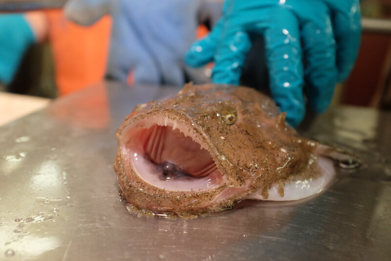

재미있게 보고 돌려보며 배우는
신나는 카드뉴스 & 퀴즈 모험! 🚀
단순한 글자 읽기는 그만! 생생한 3D 둥근 지구본과 평면 지도를 직접 손으로 돌려보고,
두 눈으로 비교하며 배우는 어린이 맞춤형 지리·문화 탐험 공간입니다.
 지리 탐험 1호
실물 위성 사진 탑재 🌍
지리 탐험 1호
실물 위성 사진 탑재 🌍
둥근 지구의 진실 1편
"그린란드 vs 인도 & 영토 Top 10"
평면 세계지도에서 엄청 커 보이는 그린란드와 인도의 진짜 크기 대결! 그리고 세계에서 영토가 가장 넓은 나라 Top 10을 3D 지구본으로 돌려보며 퀴즈를 풀어보세요.

지리 탐험 2호 실물 비행 사진 탑재 ✈️둥근 지구의 진실 2편
"왜 비행기가 바로 직진해서 가지 않나요?"
비행기 좌석 모니터에서 활처럼 휜 항로의 비밀! 평면 지도의 직선 착각과 실제 최단 대권항로 3대 노선(인천-뉴욕, 뉴욕-런던, 산티아고-시드니)을 3D 지구본으로 밝혀냅니다.

여행 탐험 1호 실물 여행 사진 탑재 🇹🇼은찬이의 대만 탐험
"타이베이 3박 4일 카드뉴스 & 퀴즈"
기차 매니아 은찬이를 위한 타이베이 여행 탐험! 타이베이 101, 고궁박물원 옥배추, 대만 고속철도(THSR), 지우펀 홍등까지 13개 테마 플립카드로 만나보세요.
✨ 신규 오픈된 신나는 공부방 모험들

NASA 실사 행성 탑재 🪐 신규 오픈우주와 태양계의 비밀
NASA 공식 고화질 실사 행성 사진 탑재! 지구 130만 개 크기 태양부터 수금지화목토천해 8형제, 3D 공전 궤도 및 실물 크기 비교 시뮬레이터!

실물 일러스트 탑재 🦖공룡과 지구의 역사
트라이아스기부터 백악기까지! 티라노사우루스의 30cm 바나나 이빨과 5톤 치악력, 은찬이 vs 공룡 크기 비교, 조류 진화의 대반전!

실물 사진 탑재 🚅세계의 신기한 초고속 기차
한국의 시속 320km KTX-청룡부터 신칸센 오리너구리 코의 비밀, 시속 574.8km TGV, 그리고 공중에 뜨는 자기부상열차 레이싱!

실물 사진 탑재 🗿 신규 오픈세계 7대 불가사의 & 랜드마크 탐험
4500년 전 기자 피라미드부터 만리장성·타지마할·마추픽추까지! 실사 사진과 3D 지구본으로 세계 10대 랜드마크를 직접 돌려보며 탐험해요.

실물 사진 탑재 🐙 신규 오픈깊은 바다의 신비한 친구들
빛 하나 없는 캄캄한 심해엔 누가 살까요? 발광 미끼로 낚시하는 아귀, 농구공만한 눈을 가진 대왕오징어까지 실사 사진으로 만나요.
우리 몸속 방어대의 비밀
주사를 맞거나 약을 먹으면 몸속에서 무슨 일이 일어날까요? 적혈구·백혈구·혈소판 삼총사부터 해열제·항생제·예방접종까지 아기자기한 캐릭터로 만나요.